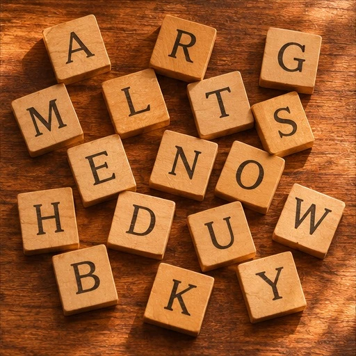

A few minutes of fun
REVIEW ONLY. Four existing featured-game proposals plus an undecided fifth slot. No fifth game has been chosen. This isolated games/catalog layout does not change stories, magazine content, or production. Category labels and groups still need review.



Jigsaw Puzzle
Play now →Fifth game
Waiting for Shai's choice.
No game selected.
Catalog destination is a working REVIEW page built from all 126 current published game IDs. There is no separate production catalog page today. Publishing this layout would also need a production catalog destination. This review link does not point back to a removed homepage dump.
Fifth-card candidates - decision open
Gem Swap - colorful matching adds a different style of play beside cards, words, memory and jigsaw. It has a 20-swap limit, so it is not unlimited free play.
Checkers - familiar board-game play against the computer; adds a board game rather than a second card or word game.
Daily Sudoku - a number puzzle to broaden the set beyond words and pictures. A better fit if the fifth slot should favor quiet number play.
These are existing catalog games, not a selection. Gumball Match and Falling Shapes are not included or counted.
Category proposal remains separate
Open the four-card category-link proposal. Its category groups and the Word Unscramble / board-games label are unresolved. This page does not silently approve or merge them.